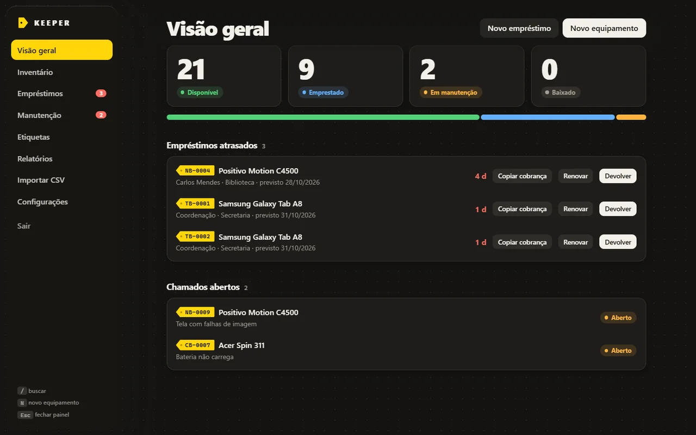
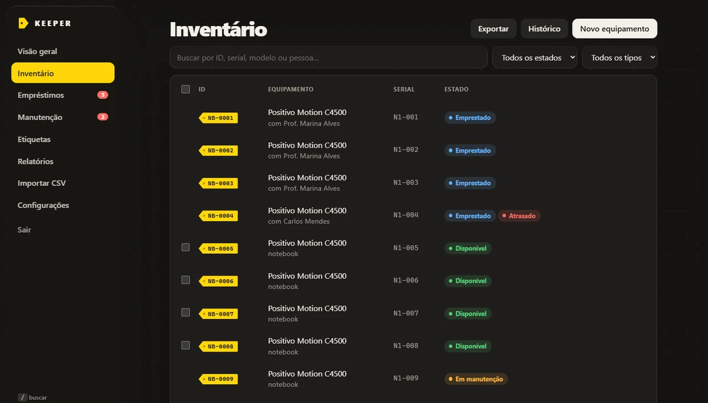

KEEPER
Substitui planilhas no controle de equipamentos de TI: inventário, empréstimos, manutenção, QR Code e backup, em um sistema web sem dependências npm.
37testes automatizados, incluindo servidor HTTP real
- Node.js
- SQLite
- JavaScript puro
- sem npm

- problema
- Planilhas não dizem quem está com qual notebook, o que está atrasado nem qual o histórico de cada equipamento.
- o que fiz
- Servidor com
node:http, API JSON, SQLite e uma SPA em JavaScript puro, sem dependências npm. As regras de estado ficam no domínio, não só na interface. Inclui login, sessões, backup e restauração, QR Code próprio e relatórios. - como verifiquei
- 37 testes com
node --test, incluindo servidor HTTP real, autenticação, CSRF e backup. - limites
- Um único administrador, sem 2FA nem backup remoto. Está documentado no repositório.
regras de estado do equipamento disponível → emprestado lote: tudo ou nada emprestado → disponível devolução encerra o empréstimo disponível → manutenção abrir chamado manutenção → disponível resolver o último chamado disponível → baixado encerra chamados abertos emprestado → manutenção recusado: devolver antes